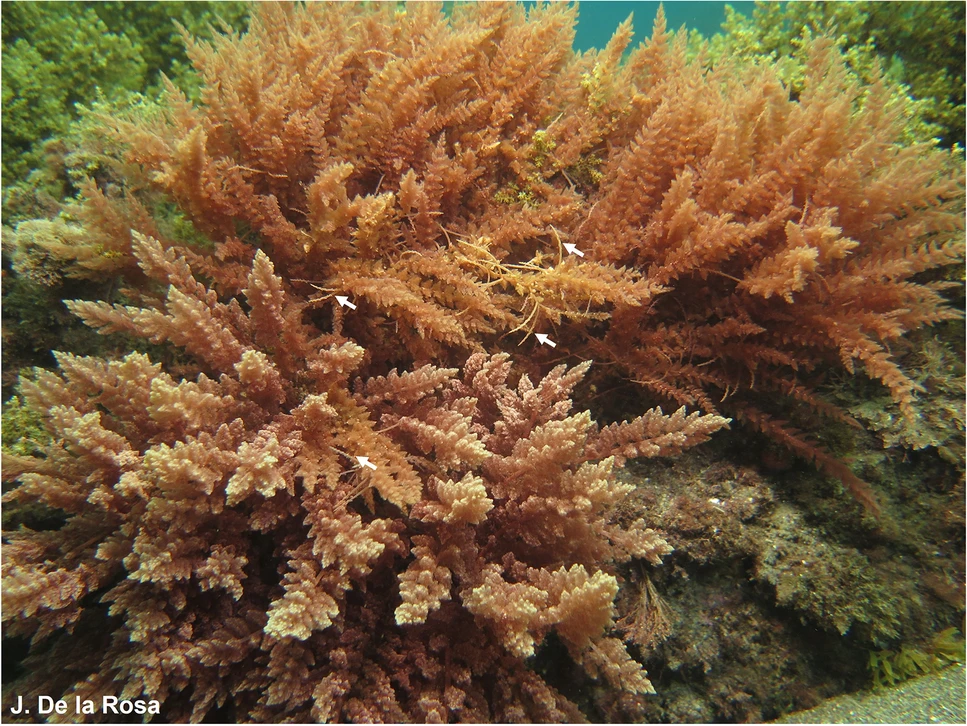
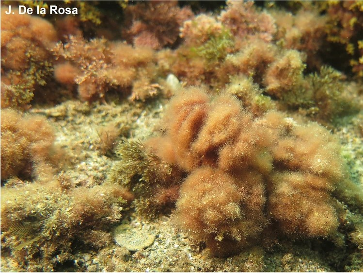
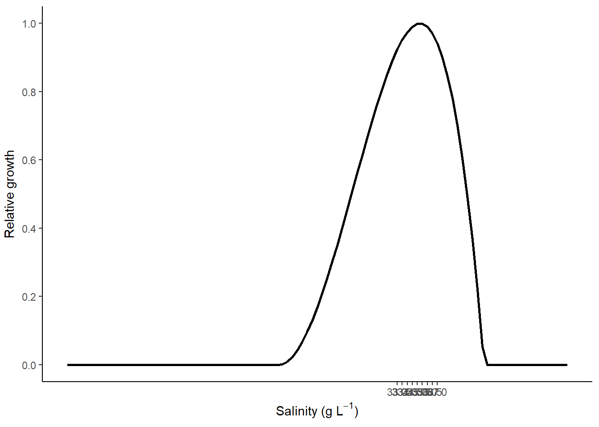
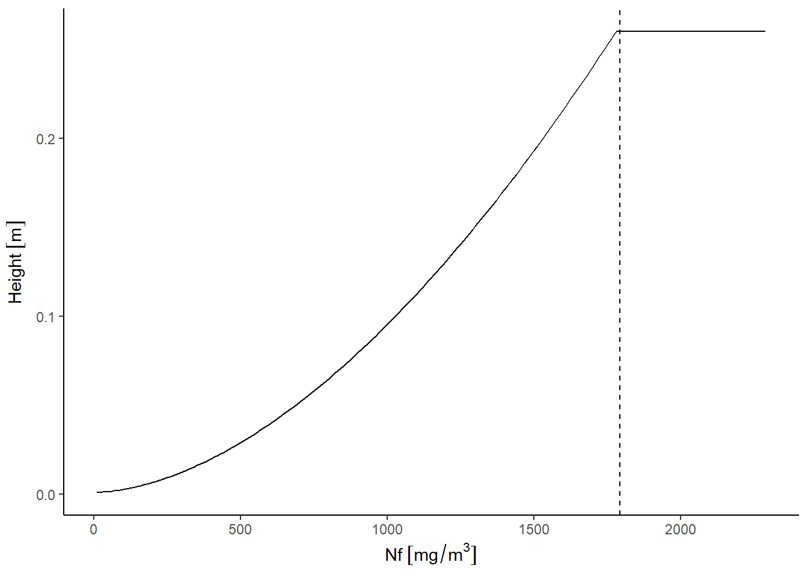

All the code in this markdown is set to ‘fold’ by default. Click each folded code chunk to see its inner workings.
# You did it!# You did it!base_path <- file.path("modelling-asparagopsis", "FRDC-seaweed")
prettyplot <-
theme_classic() +
theme(element_text(family = "sans", size = 12, colour = "black"),
axis.title.y = element_text(vjust = 2),
legend.position = "none")
remove_unit("gDW")
install_unit("gDW")
remove_unit("gFW")
install_unit("gFW")
remove_unit("photons")
install_unit("photons")
# Only works because I'm always working in nitrogen
remove_unit("mol")
install_unit("mol", "14.0067 g")
S_uM <- set_units(seq(0, 200, 0.5), "umol L-1")
S_mg <- set_units(S_uM, "mg m-3")The Asparagopsis genus (and especially A. armata) is invasive in the northeastern Atlantic and the Mediterranean (Zanolla et al. 2022). It has been studied more as an invasive genus than a native one. There are two species (or species complexes) within the genus Asparagopsis: A. armata is a temperate species while A. taxiformis is more commonly found in tropical areas (including northern Australia), and this might affect the results of the modelling - I may need to parameterise two different species, possibly distinct only in their temperature/light tolerance.
Phylogenetic analyses suggest that there is a clade within the species A. armata restricted only to Western Australia, Tasmania and New Zealand (Dijoux, Viard, and Payri 2014). It has been proposed that the species A. armata is actually two cryptic species: A. armata 1 is native to Tasmania and is invasive in the northern hemisphere, while A. armata 2 is restricted to Western Australia, Tasmania and New Zealand (Dijoux, Viard, and Payri 2014; Zanolla et al. 2022). Therefore, while the A. armata studied as an invasive species (A. armata 1) is partially representative of the Australian species, the lack of sampling in Australia and New Zealand may be leaving knowledge gaps of the potentially more widespread A. armata 2. It’s not known how much will this affect environmental growth responses in a model, given that the genus is very plastic in its environmental tolerance (Zanolla et al. 2022).
Both species follow a triphasic lifestyle, alternative between macroscopic diploid tetrasporophyte and haploid (male and female) gametophyte phases (Figure 1). Gametophytes produce gametes for sexual reproduction while tetrasporophytes produce tetrasporangia for asexual reproduction, and both phases additionally reproduce asexually through fragmentation (Zanolla et al. 2022). The phases are easy to distinguish morphologically - gametophytes look somewhat like asparagus shoots (giving the genus name) and grow as branching shoots up to ~30 cm long. Tetrasporophytes are much smaller with finer fronds, resembling pom-poms []. Tetrasporophytes are usually found year-round, while gametophytes are often only found in colder months (Zanolla, Altamirano, De La Rosa, et al. 2018). The phases may differ in their responses to environmental temperature (particularly temperature and light) and knowing the phases is important because some studies do not specify which phase of Asparagopsis they have collected or are working with.


The different forms may also be very physiologically different in some respects - at the very least with regard to temperature and daylength. Catriona Hurd also thinks it’s likely they’ll be different in their uptake rates of the different forms of nitrogen.
It has been suggested that the model should include the possibility of phosphorus limitation, as well as nitrogen limitation (switching between the limiting nutrient based on availability/internal conditions). This was considered because the places where macroalgae is being grown for nitrogen bioremediation purposes (river outflows, next to fish farms) are likely to be very high in nitrogen but not necessarily phosphates.
However, it was decided not to include phosphorus limitation. While the mechanics of including it would be fairly simple, research into the required parameters (shape and rate of uptake, internal requirements) are almost non-existent for Asparagopsis. Grisenthwaite (2023) may possibly have some of this data for tetrasporophytes but I have yet to find anything similar for gametophytes. If the ‘standard’, not species-specific Atkinson ratio of N:P were assumed (Atkinson and Smith 1983), then the algae would require 1/30th as much phosphorus as nitrogen to maintain the modelled growth. Given that macroalgae require so much more nitrogen than phosphorus, it seems unlikely that they are ever going to be phosphorus limited in coastal or oceanic waters. Phosphates are also not often measured in marine waters, so obtaining ambient data would be extremely difficult.
Still, if the Atkinson ratio (30:1 N:P) were assumed and phosphate uptake kinetics were ignored, then the minimum phosphate concentrations required to maintain the modelled growth can be estimated and reported as an additional consideration.
Some very interesting things from reading Torres et al. (2021):
Torres et al. (2021) tested the surge and internally-controlled nitrogen uptake rates of A. armata when given nitrogen in the form of ammonium, nitrate and a mix of amino acids (dominated by alanine). Nitrogen uptake (in all three forms) did not saturate at ~200 \(\mu\)M concentration, so was was better described with a linear equation rather than with Michaelis-Menton uptake kinetics
torresNO3 <- read.csv(file.path("data_raw", "sources", "torres_2021", "tores-2021-Fig2-B.csv"))
C_ni_alone <- set_units(mean(torresNO3$uptake[torresNO3$treatment == "alone"]), "umol gDW-1 h-1")
C_ni_combo <- set_units(mean(torresNO3$uptake[torresNO3$treatment == "combo"]), "umol gDW-1 h-1")
N_15 <- set_units(15, g/mol) # Torres 2021 used N-15 onlyTorres et al. (2021) did not calculate a linear uptake rate for nitrate when it was tested alone. They did not offer an explanation beyond the observation that since A. armata did not show an increase in uptake rate with concentration it likely has a limited capacity to use nitrogen. However this does not explain why they provided a slope and constant for linear uptake of nitrate in combination with other N forms, as that also did not show an increase in uptake rate with increasing concentration (although the relationship was not significant). I have decided to use a constant rate of nitrate uptake independent of concentration.
# From Torres et. al. 2021, Table 3
M_am_alone <- set_units(0.12, "L h-1 gDW-1")
C_am_alone <- set_units(10.45, "umol h-1 gDW-1")
M_am_combo <- set_units(0.14, "L h-1 gDW-1")
C_am_combo <- set_units(8.79, "umol h-1 gDW-1 ")
M_aa_alone <- set_units(0.007, "L h-1 gDW-1")
C_aa_alone <- set_units(1.69, "umol h-1 gDW-1 ")
M_aa_combo <- set_units(0.006, "L h-1 gDW-1")
C_aa_combo <- set_units(0.88, "umol h-1 gDW-1")
df <- list(
as.data.frame(S_uM) %>%
mutate(alone = lin_uptake(S_uM, M_am_alone, C_am_alone),
combo = lin_uptake(S_uM, M_am_combo, C_am_combo),
form = "ammonium") %>%
pivot_longer(names_to = "treatment", values_to = "uptake_rate", cols = c(alone, combo)),
as.data.frame(S_uM) %>%
mutate(alone = C_ni_alone,
combo = C_ni_combo,
form = "nitrate") %>%
pivot_longer(names_to = "treatment", values_to = "uptake_rate", cols = c(alone, combo)),
as.data.frame(S_uM) %>%
mutate(alone = lin_uptake(S_uM, M_aa_alone, C_aa_alone),
combo = lin_uptake(S_uM, M_aa_combo, C_aa_combo),
form = "amino acids") %>%
pivot_longer(names_to = "treatment", values_to = "uptake_rate", cols = c(alone, combo))
)
df <- bind_rows(df) %>%
mutate(form = as.factor(form),
treatment = as.factor(treatment),
S = set_units(S_uM*N_15, "mg m-3"),
uptake_rate = set_units(uptake_rate*N_15, "mg gDW-1 d-1"))Ammonium is obviously the preferred form of nitrogen uptake in A. armata. Amino acids and nitrate are taken up at approximately the same rate.
int1 <- set_units(20, "umol L-1")
int2 <- set_units(50, "umol L-1")
ggplot(df, aes(x = S, y = uptake_rate, colour = form)) +
geom_line() +
facet_wrap(vars(df$treatment)) +
geom_vline(aes(xintercept = set_units(int1, "mg m-3")), linetype = "dashed") +
geom_vline(aes(xintercept = set_units(int2, "mg m-3")), linetype = "dashed") +
labs(y = "Uptake rate", x = "Substrate concentration") +
theme_classic() +
theme(legend.position = "none")
Schuenhoff, Mata, and Santos (2006) fit a Michaelis–Menten curve to their uptake rates. They measured day and night uptake rates separately and combined. Their night and combined measurements were fairly poorly described by a Michaelis–Menten curve (R = 0.189 and 0.21 respectively) but daytime uptake was better (R\(^2\) = 0.78). Since the model doesn’t have a day-night cycle anyway, I’ll be using the daytime parameters only.
V_am <- set_units(14.85, "umol gDW-1 h-1")
K_am <- set_units(10.01, "umol L-1")
df2 <- data.frame(S = S_uM, uptake_rate = MM_uptake(conc = S_uM, V = V_am, K = K_am))
df2 <- df2 %>%
mutate(S = set_units(S_uM, "mg m-3"),
uptake_rate = set_units(uptake_rate, "mg gDW-1 d-1"))
int1 <- set_units(5, "umol L-1")
int2 <- set_units(20, "umol L-1")
int3 <- set_units(50, "umol L-1")
ggplot(dplyr::filter(df2, S <= set_units(1000, "mg m-3")),
aes(x = S, y = uptake_rate)) +
geom_line() +
geom_vline(aes(xintercept = set_units(int1, "mg m-3")), linetype = "dashed") +
geom_vline(aes(xintercept = set_units(int2, "mg m-3")), linetype = "dashed") +
geom_vline(aes(xintercept = set_units(int3, "mg m-3")), linetype = "dashed") +
labs(y = "Uptake rate", x = "Substrate concentration") +
theme_classic()
It’s immediately obvious that even though ammonium uptake by MM kinetics increases quickly at low concentrations, the linear uptake rate calculated by Torres et al. (2021) is higher than the MM uptake rate calculated by Schuenhoff, Mata, and Santos (2006), especially at low (5 \(\mu\)M) and very high (50 \(\mu\)M) concentrations.
both <- data.frame(S = set_units(seq(0, 55, 0.5), "umol L-1"))
both <- both %>%
mutate(MicMen = MM_uptake(S, V_am, K_am),
linear = lin_uptake(S, M_am_combo, C_am_combo)) %>%
pivot_longer(names_to = "shape", values_to = "uptake_rate", cols = c(MicMen, linear)) %>%
mutate(S = set_units(S, "mg m-3"),
uptake_rate = set_units(uptake_rate, "mg gDW-1 d-1"))
ggplot(both, aes(x = S, y = uptake_rate, color = shape)) +
geom_line() +
geom_vline(aes(xintercept = set_units(int1, "mg m-3")), linetype = "dashed") +
geom_vline(aes(xintercept = set_units(int2, "mg m-3")), linetype = "dashed") +
geom_vline(aes(xintercept = set_units(int3, "mg m-3")), linetype = "dashed") +
labs(y = "Uptake rate", x = "Substrate concentration") +
theme_classic() +
theme(legend.position = "none")
V_am <- drop_units(set_units(V_am, "mg gDW-1 d-1"))
K_am <- drop_units(set_units(K_am, "mg m-3"))
M_am <- drop_units(set_units(M_am_combo, "m3 gDW-1 d-1"))
C_am <- drop_units(set_units(C_am_combo, "mg gDW-1 d-1"))
M_ni <- 0
C_ni <- drop_units(set_units(C_ni_combo, "mg gDW-1 d-1"))
M_ot <- drop_units(set_units(M_aa_combo, "m3 gDW-1 d-1"))
C_ot <- drop_units(set_units(C_aa_combo, "mg gDW-1 d-1"))The model requires minimum and maximum internal nitrogen concentrations, so I’ll be taking the lowest and highest concentrations I can find.
Mata, Schuenhoff, and Santos (2010) reported that A. armata’s N-content was 6.04% of DW at harvesting in December, up from 5.90% at the time of stocking (or 5.56% up to 5.62% in May).
matadata <- read.csv(file.path("data_raw", "sources", "mata_2010", "wpd_datasets.csv"))
ls <- split.default(matadata, rep(1:12, each = 2))
for (i in 1:length(ls)){
ls[[i]] <- ls[[i]] %>%
mutate(dataset = colnames(ls[[i]][1]))
colnames(ls[[i]]) <- c("X", "Y", "dataset")
ls[[i]] <- ls[[i]] %>%
dplyr::filter(X != "X") %>%
mutate(X = as.numeric(X),
Y = as.numeric(Y))
}
mata.N <- list(ls[[2]], ls[[3]], ls[[4]], ls[[5]], ls[[9]], ls[[10]], ls[[11]], ls[[12]])
mata.N <- bind_rows(mata.N) %>%
mutate(species = case_when(str_detect(dataset, pattern = "U..rigidia") ~ "U. rigidia", TRUE ~ "A. armata"),
measure = case_when(str_detect(dataset, pattern = "N.removal") ~ "N removal", TRUE ~ "N yield"),
month = case_when(str_detect(dataset, pattern = "May") ~ "May", TRUE ~ "Dec"),
TAN_flux = X, # umol L-1 hr-1
Biofiltration = Y # gDW m-2 d-1
) %>%
dplyr::select(-c(X, Y, dataset))
mata.Y <- list(ls[[1]], ls[[6]], ls[[7]], ls[[8]])
mata.Y <- bind_rows(mata.Y) %>%
mutate(species = case_when(str_detect(dataset, pattern = "U..rigidia") ~ "U. rigidia", TRUE ~ "A. armata"),
month = case_when(str_detect(dataset, pattern = "May") ~ "May", TRUE ~ "Dec"),
TAN_flux = X, # umol L-1 hr-1
Biomass_yield = Y # gDW m-2 d-1
) %>%
dplyr::select(-c(X, Y, dataset))
save(mata.N, file = file.path("data_raw", "sources", "mata_2010", "mata.N.rda"))
save(mata.Y, file = file.path("data_raw", "sources", "mata_2010", "mata.Y.rda"))
rm(ls)Using a MM curve (V = Vmax/(Ks + [S])) Mata, Schuenhoff, and Santos (2010) estimated a maximum N-yield of 9.5 g N m-2 d-1 for A. armata in May, and a maximum biomass yield of 153.6 g DW m-2 d-1. This gives a maximum N-content of 6.18%. The minimum N% recorded in their study (at stocking) was 5.56% \(\pm\) 0.13%.
Schuenhoff, Mata, and Santos (2006) found that C- and N-content of their tank-grown A. armata remained consistent regardless of available TAN (minimum 0, maximum 400 \(\mu\)mol l\(^{-1}\) h\(^{-1}\)).
N_min <- set_units(0.056-0.0013, "g gDW-1") # Mata
Q_min <- set_units(N_min, "mg gDW-1")
N_max <- set_units(0.065, "g gDW-1") # Shuenhoff
Q_max <- set_units(N_max, "mg gDW-1")This gives a \(Q_{min}\) of 54.7 mg gDW\(^{-1}\) and a \(Q_{max}\) of 65 mg gDW\(^{-1}\). This is a very narrow range.
mata <- data.frame(x1=c('A. armata', 110, 5, 14.2, 4.1, 71,72, 2.8, 3.2,4.2, 4.1,'This study'),
x2=c('U. rigida', 110, 4, 14.2, 4.1, 44,51.7, 2.7, 2.9,2.7,3.2, 'This study'),
x3=c('A. armata', 110, 5, 21.5, 3.8, 125,153, 6.5, 8.2,7.4,9.5, 'This study'),
x4=c('U. rigida', 110, 4, 21.5, 3.8, 73, 72.2, 5.1, 6.4, 3.6, 3.9, 'This study'),
x5=c('U. lactuca', 600, 1.7, 20, 0.5, 55,60.3,3.2,5.6,2.3,NA, 'Cohen and Neori 1991; Neori et al. 1991'),
x6=c('U. rigida', 750, 2.5, 24, 0.5, 40,NA, 2,2.3,1.8,NA,'Jimenez del Rio et al. 1994, 1996'),
x7=c('U. rigida', 1900, 2, 22, 0.6, 48,47.9,1.31,3.1,1.45,NA, 'Mata and Santos 2003'))
mata <- data.frame(t(mata))
colnames(mata) <- c("Species",
"Tank_vol_L",
"Stocking_density_g.FW.L−1",
"Mean_water_temp_C",
"Max_water_exchange_vol.h−1",
"Max_biomass_yield_g.DW.m−2.d−1",
"Est_max_biomass_yield_g.DW.m−2.d−1",
"TAN_removal_g.m−2.d−1",
"Est_max_TAN_removal_g.m−2.d−1",
"N_yield_g.m−2.d−1",
"Est_max_N_yield_g.m−2.d−1",
"Reference")
mata <- mata %>%
mutate(Tank_vol = set_units(as.numeric(Tank_vol_L), "L"),
Stocking_density = set_units(as.numeric(`Stocking_density_g.FW.L−1`), "gFW L-1"),
Mean_water_temp = set_units(as.numeric(Mean_water_temp_C), "C"),
Max_water_exchange_vol = set_units(as.numeric(`Max_water_exchange_vol.h−1`), "h-1"),
Max_biomass_yield = set_units(as.numeric(`Max_biomass_yield_g.DW.m−2.d−1`), "gDW m-2 d-1"),
Est_max_biomass_yield = set_units(as.numeric(`Est_max_biomass_yield_g.DW.m−2.d−1`), "gDW m-2 d-1"),
TAN_removal = set_units(as.numeric(`TAN_removal_g.m−2.d−1`), "g m-2 d-1"),
Est_max_TAN_removal = set_units(as.numeric(`Est_max_TAN_removal_g.m−2.d−1`), "g m-2 d-1"),
N_yield = set_units(as.numeric(`N_yield_g.m−2.d−1`), "g m-2 d-1"),
Est_max_N_yield = set_units(as.numeric(`Est_max_N_yield_g.m−2.d−1`), "g m-2 d-1")
) %>%
select(-c(Tank_vol_L,`Stocking_density_g.FW.L−1`,Mean_water_temp_C,`Max_water_exchange_vol.h−1`,`Max_biomass_yield_g.DW.m−2.d−1`,`TAN_removal_g.m−2.d−1`,`Est_max_N_yield_g.m−2.d−1`,`Est_max_TAN_removal_g.m−2.d−1`,`Est_max_biomass_yield_g.DW.m−2.d−1`,`N_yield_g.m−2.d−1`))C% of tissue is not currently used within the model but might be useful later.
N_perc <- set_units(0.065, "g gDW-1")
C_perc <- set_units(0.355, "g gDW-1")Not much is known about how Asparagopsis responds to salinity, but it is thought to be fairly intolerant of low salinity (Camille White, pers. comm.). Mean salinity in most Tasmanian coastal waters is fairly consistent at ~35.25 PSU, so I’m going to set that as the optimum for both species.
S_opt <- 35.25
S_min <- 21.15 # ecklonia minimum is 80% of mean below mean. This is 40% of mean below mean.
S_max <- 41.65 # ecklonia minimum is 36% of mean below mean. This is 18% of mean below mean.
sal <- seq(0,50,0.5)
Slim <- sapply(X = sal, FUN = T_lim, spec_params = c(T_opt = S_opt, T_min = S_min, T_max = S_max))
ggplot(mapping = aes(x = sal, y = Slim)) +
geom_line(size = 1) +
theme_classic() +
theme(legend.position = "none", element_text(family = "sans", colour = "black", size = 11),
axis.title.y = element_text(vjust = 2)) +
labs(x = expression("Salinity (g L"^-1*")"), y = "Relative growth") +
scale_y_continuous(breaks = seq(0, 1, 0.2), limits = c(0,1)) +
scale_x_continuous(breaks = seq(33, 37, 0.5))
Schuenhoff, Mata, and Santos (2006) found that the DW:FW ratio of A. armata remained constant at 0.25 \(\pm\) 0.001 (mean \(\pm\) SD) regardless of season or stocking density (tetrasporophytes sourced from southern Portugal, tank-grown in fish farm effluent at a water exchange rate of 2 Vol hr\(^{-1}\)).
remove_unit("gWW")
install_unit("gWW", "0.25 gDW")
DWWW <- set_units(1, "gDW") %>%
set_units("gWW") %>%
drop_units()
remove_unit("gWW")
install_unit("gWW", "0.12 gDW")
DWWW2 <- set_units(1, "gDW") %>%
set_units("gWW") %>%
drop_units()By contrast, Sainz-Villegas et al. (2024) measured the change from FW to DW as 0.12, which would give a \(DWWW\) value of 8.33.
The tetrasporophyte of Asparagopsis is very small and has a consistent pom-pom structure. How this manifests will be dictated by culturing setup, if this is the cultured stage.
h_a <- NA
h_b <- NA
h_c <- NA
h_max <- 1Schuenhoff, Mata, and Santos (2006) investigated the optimal stocking density for A. armata in spring and winter at a high water exchange rate (2 Vol hr\(^{-1}\)). Yield was determined via:
\[ Y(g DW m^{−2} week^{−1}) = \frac{N_t (g FW) − N_0 (g FW)}{t (weeks) \times DW:FW \times Area (m^{2})} \]
The area of each tank was 0.23 m\(^{-2}\) (with a depth of 0.48 m).
Maximum yields in Schuenhoff, Mata, and Santos (2006) in both seasons was achieved at a stocking density of 5 g FW l\(^{-1}\), but the yield in spring was higher than in winter (~700 vs ~520 g DW m\(^{-2}\) week\(^{-1}\)). These can be converted to mg N m\(^{-2}\) d\(^{-1}\):
spring <- read.csv(file.path("data_raw", "sources", "schuenhoff_2006", "schuenhoff_2006_Fig1_spring-data.csv"), header = F) %>%
mutate(season = "spring")
winter <- read.csv(file.path("data_raw", "sources", "schuenhoff_2006", "schuenhoff_2006_Fig1_winter-data.csv"), header = F) %>%
mutate(season = "winter")
# initial starting value
stock_dens <- set_units(5, "gWW L-1")
stock_dens <- set_units(stock_dens, "gDW m-3")
stock_dens <- set_units(stock_dens*N_perc, "mg m-3")
yield_spring <- set_units(700, "gDW m-2 week-1")
yield_spring <- yield_spring/set_units(0.48, "m")
yield_spring <- set_units(yield_spring*N_perc, "mg m-3 d-1")
yield_winter <- set_units(520, "gDW m-2 week-1")
yield_winter <- yield_winter/set_units(0.48, "m")
yield_winter <- set_units(yield_winter*N_perc, "mg m-3 d-1")
max_growth <- c(spring = yield_spring/stock_dens, winter = yield_winter/stock_dens)
mu <- drop_units(max(max_growth))The maximum growth rate (\(\mu\)) for A. armata reported in Schuenhoff, Mata, and Santos (2006) was 34.72% in spring and 25.79% in winter. Hard to know if these are being limited by factors other than temperature/light, so I am going to use the maximum $=$34.7222222% for growth in all seasons.
Previous studies on the temperature tolerance of Asparagopsis tetrasporophytes were reviewed by Zanolla et al. (2022), and Chualáin et al. (2004) collated previous studies’ observations on growth minima and maxima. They found that A. armata had a minimum growth temperature of 5-7\(^\circ\), an optimum growth temperature of 15 or 20\(^\circ\), and a maximum growth temperature of 25\(^\circ\)C. However, it should be noted that within Chualáin et al. (2004) the only sample collected from Australia (Sorrento Back Beach, Victoria, from the lower eulittoral zone) had an optimum growth temperature of 15\(^\circ\)C.
zanolla1 <- list(read.csv(file.path("data_raw", "sources", "zanolla_2015", "12 degrees.csv"), header = F) %>% mutate(temp = 12),
read.csv(file.path("data_raw", "sources", "zanolla_2015", "15 degrees.csv"), header = F) %>% mutate(temp = 15),
read.csv(file.path("data_raw", "sources", "zanolla_2015", "18 degrees.csv"), header = F) %>% mutate(temp = 18),
read.csv(file.path("data_raw", "sources", "zanolla_2015", "22 degrees.csv"), header = F) %>% mutate(temp = 22),
read.csv(file.path("data_raw", "sources", "zanolla_2015", "26 degrees.csv"), header = F) %>% mutate(temp = 26))
zanolla1 <- bind_rows(zanolla1)
colnames(zanolla1) <- c("Irradiance", "NPR", "Temperature")
zanolla1$NPR_rel <- zanolla1$NPR/max(zanolla1$NPR)
# # For when I need units
# zanolla1$Irradiance <- set_units(zanolla1$Irradiance, "umol m-2 s-1")
# zanolla1$NPR <- set_units(zanolla1$NPR, "mg gWW-1 h-1")
# zanolla1$Temperature <- set_units(zanolla1$Temperature, "C")zanolla1 <- zanolla1 %>%
mutate(Irr_group = case_when(
Irradiance > 0 & Irradiance < 10 ~ "~5.7", Irradiance > 10 & Irradiance < 20 ~ "~19.8",
Irradiance > 20 & Irradiance < 35 ~ "~32.3", Irradiance > 35 & Irradiance < 65 ~ "~55.3",
Irradiance > 65 & Irradiance < 130 ~ "~124.1", Irradiance > 130 & Irradiance < 260 ~ "~254.4",
Irradiance > 260 & Irradiance < 370 ~ "~365.9", Irradiance > 370 & Irradiance < 510 ~ "~504.5",
Irradiance > 510 ~ "~598.5", TRUE ~ NA),
Irr_group = factor(Irr_group,
levels = c("~5.7", "~19.8", "~32.3", "~55.3", "~124.1", "~254.4", "~365.9", "~504.5", "~598.5")))
pT.1 <- ggplot(dplyr::filter(zanolla1, Irradiance > 0),
aes(x = Temperature, y = NPR_rel, color = Irr_group)) +
geom_line() +
theme_classic()
# pT.1both <- bind_rows(
list(
read.csv(file.path("data_raw", "sources", "chualain_2004", "armata.csv"), header = F) %>% mutate(species = "armata"),
read.csv(file.path("data_raw", "sources", "chualain_2004", "taxiformis.csv"), header = F) %>% mutate(species = "taxiformis")
)) %>%
mutate(sample = V3,
temperature = V2,
variable = factor(V4, levels = c(" grow min", " grow max"), labels = c("grow_min", "grow_max"))) %>%
group_by(species, variable) %>%
reframe(temperature = mean(temperature))
T_max_arma <- both$temperature[both$species == "armata" & both$variable == "grow_max"]
T_min_arma <- both$temperature[both$species == "armata" & both$variable == "grow_min"]
T_max_taxi <- both$temperature[both$species == "taxiformis" & both$variable == "grow_max"]
T_min_taxi <- both$temperature[both$species == "taxiformis" & both$variable == "grow_min"]
T_opt_arma <- mean(c(20,20,15,15,20,20,20,20,20,20,20))
T_opt_taxi <- mean(c(25,25,25,25,25,25,25,25,25,20,25,25,25))test_T <- data.frame(Tc = seq(5, 28, 0.5))
test_params <- c(T_opt = T_opt_arma, T_max = T_max_arma, T_min = T_min_arma)
test_T$arma <- sapply(X = test_T$Tc, FUN = T_lim, spec_params = test_params)
test_params <- c(T_opt = T_opt_taxi, T_max = T_max_taxi, T_min = T_min_taxi)
test_T$taxi <- sapply(X = test_T$Tc, FUN = T_lim, spec_params = test_params)
pT.2 <- pT.1 +
geom_line(data = test_T, aes(x = Tc, y = arma), color = "black") +
geom_line(data = test_T, aes(x = Tc, y = taxi), color = "black", linetype = "dashed")
# pT.2It seems that A. taxiformis has a slightly higher optimum temperature than A. armata * The optimum temperature for A. armata in Zanolla et al. (2015) was ~22\(^\circ\)C, although they only tested 5 temperatures (12, 15, 18, 22, and 26\(^\circ\)C). * Sainz-Villegas et al. (2024) also only tested three temperatures (15, 20, and 25\(^\circ\)C). There was no positive growth at 25\(^\circ\)C regardless of irradiance and 20\(^\circ\)C showed mixed results. However, their irradiance was kept between 55-60 \(\mu\)mol photons m\(^{-2}\) s\(^{-1}\), which seems very low to me. * Mata et al. (2006) found that net growth was significantly decreased above 29\(^\circ\)C due to an increase in respiration * Mata et al. (2017) investigated temperature limits of A. taxiformis, but like Zanolla et al. (2015) they didn’t actually do a full temperature range experiment and only tested three temperatures. Still, growth was best at 20.2\(^\circ\)C.
Figueroa et al. (2006) grew A. armata in fish pond effluent and measured \(K_d\) at different macroalgae densities. From this I can work out an \(a_cs\) (self-shading) value.
They expressed ETR in g DW but didn’t provide details of how g FW was converted to g DW. I’ll just use my previously calculated ratio of 4.
get_Kd <- function(z0 = 0, E0, z1, E1) {
Kd <- #log(E2/E1) * (z1-z2)-1
1/z1*log(E0/E1)
return(unname(Kd))
}
cond <- data.frame(E_0 = c(2112, 2112, 2112, 2112), # umol photons m-2 s-1
dens = c(0, 4, 6, 8), # g (FW?) L-1
E_1 = c(2112*0.9, 264, 220, 110))
cond$Kd <- sapply(X = cond$E_1, FUN = get_Kd, E0 = 2112, z1 = -0.1, z0 = 0) * -1
cond$Kma <- cond$Kd - cond$Kd[cond$dens == 0]
cond$dens.DW <- set_units(cond$dens*DWWW, "gDW L-1") # g WW L-1
# Figueroa 2006 did not measure N percentage, but we can take a minimum and maximum of 0.055 and 0.065 for starters
cond$dens.N.hi <- cond$dens.DW * N_perc
cond$dens.N.lo <- cond$dens.DW * set_units(N_min, "g gDW-1")
cond$dens.N.hi <- set_units(cond$dens.N.hi, "mg m-3")
cond$dens.N.lo <- set_units(cond$dens.N.lo, "mg m-3")
# Within the model, k_ma = Nf * h_m * a_cs * max(h_m/d_top, 1) * 1/(min(h_m, d_top)), d_top =/= 0
# Assuming a maximum height of 26cm because the algae are so dense
cond$a_cs.lo <- 1/(cond$dens.N.lo *
set_units(0.26, "m") *
set_units(pmax(0.26/0.1, 1), "m") *
set_units(1/(pmin(0.26, 0.1)), "m") *
set_units(1/cond$Kma, "m-1"))
cond$a_cs.hi <- 1/(cond$dens.N.hi *
set_units(0.26, "m") *
set_units(pmax(0.26/0.1, 1), "m") *
set_units(1/(pmin(0.26, 0.1)), "m") *
set_units(1/cond$Kma, "m-1"))
all_acs <- c(cond$a_cs.lo[!is.na(cond$a_cs.lo)], cond$a_cs.hi[!is.na(cond$a_cs.hi)])
a_cs <- mean(all_acs)
all_acs <- drop_units(all_acs)
a_cs <- drop_units(a_cs)The above (from Figueroa et al. (2006)) actually gave a fairly narrow range of \(a_{cs}\) values to use, from \(2.027 \times 10^{-6}\) to \(3.337 \times 10^{-6}\). Taking an average of those values gives \(a_{cs}=\)\(2.509 \times 10^{-6}\).
The optimum irradiance in Zanolla et al. (2015) was ~150 \(\mu\)mol photons m\(^{-2}\) s\(^{-1}\) but this was only obvious in the 22\(^\circ\) trials.
pI.1 <- ggplot(zanolla1, aes(x = Irradiance, y = NPR_rel, colour = as.factor(Temperature))) +
geom_line() +
scale_y_continuous(limits = c(0,1)) +
theme_classic()
pI.1
Using \(I_o=150\) in the \(I_{lim}\) function while trying to approximate the culture conditions (clear water, algae grown close to the surface) specified in Zanolla et al. (2015) produces a good approximation (black line, below). The self-shading constant used below is the one calculated from Figueroa et al. (2006) above.
# Convert density to N
dens.1 <- set_units(0.04/DWWW, "gDW L-1") # Zanolla tested 1 individual in lab settings
dens.1 <- dens.1*N_perc
dens.1 <- set_units(dens.1, "mg m-3")
I_o <- 150
test_I <- data.frame(Ic = seq(0, 800, 20))
site_params_light <- c(d_top = 0.05, hc = 1, kW = 1/100)
spec_params_light <- c(a_cs = a_cs, # This is the a_cs value from Figueroa 2006
I_o = I_o,
h_max = 0.1) # height is constant at full culture depth range
test_I$I_lim <- sapply(X = test_I$Ic, FUN = I_lim, Nf = drop_units(dens.1),
spec_params = spec_params_light, site_params = site_params_light)pI.1 +
geom_line(data = test_I, aes(x = Ic, y = I_lim), color = "black") +
geom_vline(xintercept = 150, color = "grey", linetype = "dashed")
“The highest percentage of biomass lost from any single tetrasporophyte in the experiment was 19.34% in the high turbulence treatment, and the lowest was 0.95% biomass loss in the static treatment.” (Hall 2023, 37)
Since the tetrasporophyte is not being grown in open water, the biomass lost due to velocity will be 0 and they will lose biomass from turbulence only.
hall <- read.csv(file.path("data_raw", "sources", "hall_2023", "hall_2023.csv"))
ls <- split.default(hall, rep(1:12, each = 2))
for (i in 1:length(ls)){
ls[[i]] <- ls[[i]] %>%
mutate(dataset = colnames(ls[[i]][1]))
colnames(ls[[i]]) <- c("Label", "perc_biomass_lost", "dataset")
ls[[i]] <- ls[[i]] %>%
dplyr::filter(Label != "Label") %>%
mutate(perc_biomass_lost = as.numeric(perc_biomass_lost)) %>%
dplyr::filter(!is.na(perc_biomass_lost))
}
turbulence_levels <- c('static', 'low', 'mid', 'high')
velocity_levels <- c('low', 'low.mid', 'mid', 'mid.high', 'high', 'max.high')
hall_2.9 <- bind_rows(list(ls[[1]], ls[[2]])) %>%
mutate(Label = rep(c('static', 'low', 'mid', 'high'), 2),
Exp = "Turbulence",
Form = "Tetrasporophyte",
Data = c(rep("Mean", 4), rep("Mean+SE", 4))) %>%
dplyr::select(-dataset) %>%
pivot_wider(names_from = Data, values_from = perc_biomass_lost) %>%
mutate(SE = `Mean+SE` - Mean) %>%
dplyr::select(-`Mean+SE`) %>%
pivot_longer(names_to = "Data", values_to = "perc_biomass_lost", cols = c(Mean, SE)) %>%
mutate(Label = factor(Label, levels = turbulence_levels))
ggplot(filter(hall_2.9, Data == "Mean")) +
geom_col(aes(x = Label, y = perc_biomass_lost*100)) +
prettyplot +
labs(x = "Level of turbulence", y = "Mean % of biomass loss")
D_st <- hall_2.9$perc_biomass_lost[hall_2.9$Data == "Mean" & hall_2.9$Label == "static"]
D_lo <- hall_2.9$perc_biomass_lost[hall_2.9$Data == "Mean" & hall_2.9$Label == "low"]
D_mi <- hall_2.9$perc_biomass_lost[hall_2.9$Data == "Mean" & hall_2.9$Label == "mid"]
D_hi <- hall_2.9$perc_biomass_lost[hall_2.9$Data == "Mean" & hall_2.9$Label == "high"]This is exactly what’s going into the species vectors.
| Parameter | Value | Source |
|---|---|---|
| \(V_{am}\), \(K_{am}\) | 4.9919879, 140.207067 | |
| \(M_{am}\), \(C_{am}\) | 0.00336, 2.9548534 | |
| \(V_{ni}\), \(K_{ni}\) | NA, NA | |
| \(M_{ni}\), \(C_{ni}\) | 0, 0.1138183 | |
| \(V_{ot}\), \(K_{ot}\) | NA, NA | |
| \(M_{ot}\), \(C_{ot}\) | 1.44^{-4}, 0.2958215 | |
| \(K_{c}\) | 6 | |
| \(Q_{min}\), \(Q_{max}\) | 54.7, 65 | |
| \(N_{min}\), \(N_{max}\) | 0.0547, 0.065 | |
| \(DWWW\) | 4 | |
| \(\mu\) | 0.3472222 | |
| \(D_{m}\), \(D_{v}\) | NA, NA | |
| \(D_{lo}\), \(D_{mi}\), \(D_{hi}\) | 0.0487879, 0.0769697, 0.1137879 | |
| \(I_o\), \(a_{cs}\) | 150, 2.5090131^{-6} | |
| \(T_{opt}\), \(T_{min}\), \(T_{max}\) (A. armata) | 19.0909091, 8.8954869, 22.4292359 | |
| \(T_{opt}\), \(T_{min}\), \(T_{max}\) (A. taxiformis) | 24.6153846, 16.0326603, 29.226247 | |
| \(S_{opt}\), \(S_{min}\), \(S_{max}\) | 35.25, 21.15, 41.65 | |
| \(h_a\), \(h_b\), \(h_c\), \(h_{max}\) | NA, NA, NA, 1 |
The model uses a named vector, which can be loaded straight from Rdata files, but I’m saving as a .csv file because that’s easier for human reading.
a_armata_tetrasporophyte <- c(
V_am = V_am,
K_am = K_am,
M_am = M_am,
C_am = C_am,
V_ni = V_ni,
K_ni = K_ni,
M_ni = M_ni,
C_ni = C_ni,
V_ot = V_ot,
K_ot = K_ot,
M_ot = M_ot,
C_ot = C_ot,
Q_min = Q_min,
Q_max = Q_max,
K_c = K_c,
mu = mu,
# N_min = N_min,
# N_max = N_max,
D_m = D_m,
D_ve = D_ve,
D_lo = D_lo,
D_mi = D_mi,
D_hi = D_hi,
a_cs = a_cs, # or a_cs from figueroa 2006?
I_o = I_o,
T_opt = T_opt_arma,
T_min = T_min_arma,
T_max = T_max_arma,
S_opt = S_opt,
S_min = S_min,
S_max = S_max,
h_a = h_a,
h_b = h_b,
h_c = h_c,
h_max = h_max,
DWWW = DWWW
)
param_units <- c(
"mg gDW-1 d-1", # V_am
"mg m-3", # K_am
rep("m3 gDW-1 d-1", 2), # M_am, C_am
"mg gDW-1 d-1", # V_ni
"mg m-3", # K_ni
rep("m3 gDW-1 d-1", 2), # M_ni, C_ni
"mg gDW-1 d-1", # V_ot
"mg m-3", # K_ot
rep("m3 gDW-1 d-1", 2), # M_ot, C_ot
rep("mg gDW-1", 3), # Q_min, Q_max, K_c
"d-1", # mu
# rep("g gDW-1", 2), # N_min, N_max
rep("d-1", 5), # D_m
"m mg-1", # a_cs
"umol photons m-2 s-1", # I_o
rep("degrees C", 3), # T_opt, T_min, T_max
rep("g L-1", 3), # S_opt, S_min, S_max
rep("d-1", 3), # h_a, h_b, h_c
"m", # h_max
"gWW gDW-1" # DWWW
)
a_taxiformis_tetrasporophyte <- a_armata_tetrasporophyte
a_taxiformis_tetrasporophyte['T_opt'] <- T_opt_taxi
a_taxiformis_tetrasporophyte['T_max'] <- T_max_taxi
a_taxiformis_tetrasporophyte['T_min'] <- T_min_taxi# Save data as a named vector - model uses this
# save(a_armata_tetrasporophyte, file = file.path(base_path, "data", "asparagopsis_armata_tetrasporophyte.rda"))
# load(file.path(base_path, "data", "asparagopsis_armata_tetrasporophyte.rda")) # use this to load data from file
# Save duplicate as CSV - easier for humans to read
df <- data.frame(parameter = names(a_armata_tetrasporophyte),
unit = as.character(param_units),
value = (unname(a_armata_tetrasporophyte)))
write.csv(df, file.path(base_path, "data", "asparagopsis_armata_tetrasporophyte.csv"))
# save(a_taxiformis_tetrasporophyte, file = file.path(base_path, "data", "asparagopsis_taxiformis_tetrasporophyte.rda"))
df <- data.frame(parameter = names(a_taxiformis_tetrasporophyte),
unit = as.character(param_units),
value = (unname(a_taxiformis_tetrasporophyte)))
write.csv(df, file.path(base_path, "data", "asparagopsis_taxiformis_tetrasporophyte.csv"))It’s possible that the gametophyte and tetrasporophyte will have different uptake rates of ammonium and nitrate, and in the wild they do not appear to be affected by fluctuations in nutrients Zanolla, Altamirano, Carmona, et al. (2018). However, if we assume that the gametophyte has a similar preference for ammonium to the sporophyte then it’s not surprising that it would show little response to nutrients in the environment, as natural nitrogen is mostly in nitrate form with ammonium only being present at constant low levels generally.
As far as I can tell, no-one has investigated nitrogen uptake directly in Asparagopsis gametophytes. I will therefore be using the uptake rates calculated for the tetrasporophyte.
Maximum (or, at least, very high) internal nitrogen concentrations for Asparagopsis are fairly easy to find. A. taxiformis had a protein content of 22.69 %DM in Nunes et al. (2024) and 23.76 %DM in Pacheco et al. (2020). Nunes et al. (2024) also found that A. armata had a protein concentration of 24.23 %DM. However, the A. taxiformis spp. gametophytes eaten in Hawaii have also been reported having protein concentrations <10 %DW (McDermid and Stuercke 2003), and all of these measurements came from the invasive range of Asparagopsis.
Samples of A. armata collected from New Zealand showed a protein concentrations ranging from of 10.94 to 15.2 %DW (Mihaila et al. 2022; Zemke-White and Clements 1999), while Australian samples of A. taxiformis had mean a protein concentration of 18.2 %DW (Brooke et al. 2020).
There are two observations made from this. First, A. armata appears to have a slightly higher average protein concentration than A. taxiformis, although this might be due to small sample sizes and a lack of direct comparison. Second, the samples collected from Australia and New Zealand had a much lower protein concentration than those collected elsewhere (Nunes et al. 2024; Mihaila et al. 2022), possibly reflecting the region’s naturally low nitrogen levels. Luckily, these results can still be useful as there appear to be no significant differences between the protein content of cultured and wild macroalgae, so intra-species variation is probably the largest factor determining the protein content of most macroalgae (Angell et al. 2016).
P_range_taxi <- sort(c(22.69, 23.76, 18.2, 7.5))/100 # Asparagopsis taxiformis
P_range_arma <- sort(c(24.23, 15.2, 10.94))/100 # Asparagopsis armata
N_conv_aspara <- 5.63
N_conv_reds <- 5.10There are also different possible ways of converting protein to nitrogen: Angell et al. (2016) suggested that a factor 5.10 is most appropriate for red algae, although they also reported Asparagopsis specifically having a conversion factor of 5.63 which was used by Mihaila et al. (2022) in their calculations. These two conversion factors produce nitrogen concentrations ranging from 2.15 to 4.75 and 1.94 to 4.3 % DW for A. armata respectively.
N_min <- set_units(min(P_range_arma)/N_conv_aspara, "g gDW-1")
Q_min <- drop_units(set_units(N_min, "mg gDW-1"))
N_max <- set_units(max(P_range_arma)/N_conv_aspara, "g gDW-1")
Q_max <- drop_units(set_units(N_max, "mg gDW-1"))This gives a \(Q_{min}\) of 19.43 mg gDW\(^{-1}\) and a \(Q_{max}\) of 43.04 mg gDW\(^{-1}\).
There’s really not enough information to do this seperately, so we’ll have to go with the tetrasporophyte estimate.
Nunes et al. (2024) found a dry mass of 6.55 \(\pm\) 1.25% for A. taxiformis and 7.68 \(\pm\) 1.07% for A. armata, and reported that similar values were found by Roque et al. (2019).
remove_unit("gWW")
install_unit("gWW", "1/7.68 gDW") # A. armata
DWWW <- set_units(1, "gDW") %>%
set_units("gWW") %>%
drop_units()Within the model, “height” does not indicate height exactly, rather it indicates how much of the available space is being taken up by the macroalgae. This combines with density (mg m\(^{-3}\), i.e. growth) to indicate how much light and nutrients the macroalgae has access to. For example:
Zanolla, Altamirano, De La Rosa, et al. (2018) reported that A, taxiformis gametophyte branches had a maximum length of ~26 cm at ~115 g DW m\(^{-2}\). This is equivalent to approximately 29.9 g DW m\(^{-3}\). Assuming a nitrogen concentration of 6%, this translates to 1794 g N mg\(^{-3}\). Zanolla, Altamirano, De La Rosa, et al. (2018) found that smaller size classes were more abundant than higher classes, indicating that the gametophyte prioritises new shoots (lateral growth) over increasing height (vertical growth). Within the model this is captured by a very slow overall increase in height.
h_a <- 3850
h_b <- 1.75
h_c <- 0.001
h_max <- 0.26
dens <- seq(10, drop_units(sizedisN)+500, 10)
h <- sapply(X = dens, FUN = algae_height, spec_params = c(h_a = h_a, h_b = h_b, h_c = h_c, h_max = h_max))
height <- data.frame(dens = set_units(dens, "mg m-3"), h = set_units(h, "m"))
ggplot(height) +
geom_line(aes(x = dens, y = h)) +
geom_vline(xintercept = sizedisN, linetype = "dashed") +
prettyplot +
labs(x = "Nf", y = "Height")
Zanolla, Altamirano, De La Rosa, et al. (2018)? Wright et al. (2022)?
By default, the gametophyte temperature parameters for Asparagopsis in the model will be identical to the tetrasporophyte. This is because much less research has been done on the gametophyte phases. However, the gametophyte and tetrasporophyte phase might have similar temperature optima. In Chualáin et al. (2004) A.taxiformis tetrasporophytes had an optimum growth temperature of 25\(^{\circ}\), and this same growth optimum was observed in A.taxiformis gametophytes by Padilla-Gamiño and Carpenter (2007).
However, Mihaila et al. (2024) tested the growth of juvenile (microscopic) gametophytes at 15, 18 and 21\(^{\circ}\) and found that growth was highest at 18\(^{\circ}\), somewhat reduced at 15\(^{\circ}\) and substantially reduced at 21\(^{\circ}\). This temperature optimum is lower than the NA\(^{\circ}\) optimum found for the tetrasporophyte in Section 2.5, and the maximum is much lower. This might indicate that the gametophyte stage has a narrower temperature tolerance than the tetrasporophyte stage.
There isn’t really enough data to calculate a good \(a_{cs}\) value for the Asparagopsis gametophyte, so I’ll be using the tetrasporophyte \(a_{cs}\) value calculated in Section 2.6.
Hall (2023) counducted three (seemingly identical?) velocity treatments on gametophytes and measured % biomass lost. Experiments 1 and 2 showed no differences between treatments, but experiment 3 did. I’m going to use experiment 3’s results to get a linear rate with velocity, and set base and maximum rates based on observations from all three experiments.
In Tasmania, A. armata are harvested after only 6 weeks because the shedding rate means they don’t get any additional biomass. There are two ways to implement this:
A loss term might end up looking like: \[ D_m = f(growdays) + f(h_m/h_{max}) + f(V) \]
Where \(D_m\) is the % of biomass lost d\(^{-1}\).
Is fragmentation maybe a function of age (maturity) or length of thalli, in addition to exposure?
Hall (2023) investigated tetrasporophyte and gametophyte fragmentation at different levels of turbulence and water velocities. Focus of the study was on how fragmentation can be used in nurseries to enhance stock production. The laminar water velocities tested were:
These results are summarised in Figures 3.17, 3.18 and 3.19.
hall_3.17 <- bind_rows(list(ls[[3]], ls[[4]])) %>%
mutate(Label = rep(c('low', 'low.mid', 'mid', 'mid.high', 'high'), 2),
Exp = "Velocity 1",
Form = "Gametophyte",
Data = c(rep("Mean", 5), rep("Mean+SE", 5))) %>%
dplyr::select(-dataset) %>%
pivot_wider(names_from = Data, values_from = perc_biomass_lost) %>%
mutate(SE = `Mean+SE` - Mean) %>%
dplyr::select(-`Mean+SE`) %>%
pivot_longer(names_to = "Data", values_to = "perc_biomass_lost", cols = c(Mean, SE)) %>%
mutate(Label = factor(Label, levels = velocity_levels, labels = Vlevels))
hall_3.18 <- bind_rows(list(ls[[5]], ls[[6]])) %>%
mutate(Label = rep(c('low', 'low.mid', 'mid', 'mid.high', 'high', 'max.high'), 2),
Exp = "Velocity 2",
Form = "Gametophyte",
Data = c(rep("Mean", 6), rep("Mean+SE", 6))) %>%
dplyr::select(-dataset) %>%
pivot_wider(names_from = Data, values_from = perc_biomass_lost) %>%
mutate(SE = `Mean+SE` - Mean) %>%
dplyr::select(-`Mean+SE`) %>%
pivot_longer(names_to = "Data", values_to = "perc_biomass_lost", cols = c(Mean, SE)) %>%
mutate(Label = factor(Label, levels = velocity_levels, labels = Vlevels))
hall_3.19 <- bind_rows(list(ls[[7]], ls[[8]])) %>%
mutate(Label = rep(c('low', 'low.mid', 'mid', 'mid.high', 'high', 'max.high'), 2),
Exp = "Velocity 3",
Form = "Gametophyte",
Data = c(rep("Mean", 6), rep("Mean+SE", 6))) %>%
dplyr::select(-dataset) %>%
pivot_wider(names_from = Data, values_from = perc_biomass_lost) %>%
mutate(SE = `Mean+SE` - Mean) %>%
dplyr::select(-`Mean+SE`) %>%
pivot_longer(names_to = "Data", values_to = "perc_biomass_lost", cols = c(Mean, SE)) %>%
mutate(Label = factor(Label, levels = velocity_levels, labels = Vlevels))
hall_gam_vel <- bind_rows(list(hall_3.17, hall_3.18, hall_3.19)) %>%
mutate(Exp = as.factor(Exp),
Data = as.factor(Data))
p1 <- ggplot(filter(hall_gam_vel, Data == "Mean"),
aes(x = as.numeric(Label), y = perc_biomass_lost*100, colour = Exp)) +
geom_point() +
prettyplot +
labs(x = "Velocity [m/s]", y = "Mean % biomass lost")
p1
I’m not sure what’s going on with Velocity Experiment 2 (in green, above) but the other two experiments show a clear trend of biomass lost with increasing velocity.
hall_gam_vel2 <- hall_gam_vel %>%
filter(Exp != "Velocity 2") %>%
filter(Data == "Mean")
line_a <- nls(formula = as.formula(perc_biomass_lost ~ a * as.numeric(Label)),
start = c(a = 0.1),
data = hall_gam_vel2)
D_ve <- unname(coef(line_a))
p2 <- p1 +
geom_line(data = hall_gam_vel, aes(x = as.numeric(Label), y = 100*D_ve*as.numeric(Label)))
p2
Hall (2023) also investigated fragmentation due to turbulence on the gametophyte, which is summarised in Figures 3.28 and 3.29.
hall_3.28 <- bind_rows(list(ls[[9]], ls[[10]])) %>%
mutate(Label = rep(c('static', 'low', 'mid', 'high'), 2),
Exp = "Turbulence 1",
Form = "Gametophyte",
Data = c(rep("Mean", 4), rep("Mean+SE", 4))) %>%
dplyr::select(-dataset) %>%
pivot_wider(names_from = Data, values_from = perc_biomass_lost) %>%
mutate(SE = `Mean+SE` - Mean) %>%
dplyr::select(-`Mean+SE`) %>%
pivot_longer(names_to = "Data", values_to = "perc_biomass_lost", cols = c(Mean, SE)) %>%
mutate(Label = factor(Label, levels = turbulence_levels))
hall_3.29 <- bind_rows(list(ls[[11]], ls[[12]])) %>%
mutate(Label = rep(c('static', 'low', 'mid', 'high'), 2),
Exp = "Turbulence 2",
Form = "Gametophyte",
Data = c(rep("Mean", 4), rep("Mean+SE", 4))) %>%
dplyr::select(-dataset) %>%
pivot_wider(names_from = Data, values_from = perc_biomass_lost) %>%
mutate(SE = `Mean+SE` - Mean) %>%
dplyr::select(-`Mean+SE`) %>%
pivot_longer(names_to = "Data", values_to = "perc_biomass_lost", cols = c(Mean, SE)) %>%
mutate(Label = factor(Label, levels = turbulence_levels))
hall_gam_turb <- bind_rows(list(hall_3.28, hall_3.29)) %>%
mutate(Exp = as.factor(Exp),
Data = as.factor(Data))
p1 <- ggplot(filter(hall_gam_turb, Data == "Mean"),
aes(x = Label, y = perc_biomass_lost*100, fill = Exp)) +
geom_col(position = "dodge") +
prettyplot +
labs(x = "Level of turbulence", y = "Mean % biomass lost")
p1
Looks very different between the two treatments, but I’m going to go with the one that shows a clear trend.
D_st <- hall_3.28$perc_biomass_lost[hall_3.28$Data == "Mean" & hall_3.28$Label == "static"]
D_lo <- hall_3.28$perc_biomass_lost[hall_3.28$Data == "Mean" & hall_3.28$Label == "low"]
D_mi <- hall_3.28$perc_biomass_lost[hall_3.28$Data == "Mean" & hall_3.28$Label == "mid"]
D_hi <- hall_3.28$perc_biomass_lost[hall_3.28$Data == "Mean" & hall_3.28$Label == "high"]| Parameter | Value | Source |
|---|---|---|
| \(V_{am}\), \(K_{am}\) | 4.9919879, 140.207067 | Schuenhoff, Mata, and Santos (2006) |
| \(M_{am}\), \(C_{am}\) | 0.00336, 2.9548534 | Torres et al. (2021) |
| \(V_{ni}\), \(K_{ni}\) | NA, NA | |
| \(M_{ni}\), \(C_{ni}\) | 0, 0.1138183 | |
| \(V_{ot}\), \(K_{ot}\) | NA, NA | |
| \(M_{ot}\), \(C_{ot}\) | 1.44^{-4}, 0.2958215 | |
| \(K_{c}\) | 6 | |
| \(Q_{min}\), \(Q_{max}\) | 19.4316163, 43.0373002 | |
| \(N_{min}\), \(N_{max}\) | 0.0194316163410302, 0.0430373001776199 | |
| \(DWWW\) | 7.68 | |
| \(\mu\) | 0.3472222 | |
| \(D_{m}\), \(D_{v}\) | NA, 0.0153363 | |
| \(D_{lo}\), \(D_{mi}\), \(D_{hi}\) | 0.0538993, 0.1270484, 0.2567621 | |
| \(I_o\), \(a_{cs}\) | 150, 2.5090131^{-6} | |
| \(T_{opt}\), \(T_{min}\), \(T_{max}\) (A. armata) | 19.0909091, 8.8954869, 22.4292359 | |
| \(T_{opt}\), \(T_{min}\), \(T_{max}\) (A. taxiformis) | 24.6153846, 16.0326603, 29.226247 | |
| \(S_{opt}\), \(S_{min}\), \(S_{max}\) | 35.25, 21.15, 41.65 | |
| \(h_a\), \(h_b\), \(h_c\), \(h_{max}\) | 3850, 1.75, 0.001, 0.26 |
a_armata_gametophyte <- c(
V_am = V_am,
K_am = K_am,
M_am = M_am,
C_am = C_am,
V_ni = V_ni,
K_ni = K_ni,
M_ni = M_ni,
C_ni = C_ni,
V_ot = V_ot,
K_ot = K_ot,
M_ot = M_ot,
C_ot = C_ot,
Q_min = Q_min,
Q_max = Q_max,
K_c = K_c, # THIS IS A PLACEHOLDER
mu = mu, # From tetrasporophyte
# N_min = N_min,
# N_max = N_max,
D_m = D_m,
D_ve = D_ve,
D_lo = D_lo,
D_mi = D_mi,
D_hi = D_hi,
a_cs = a_cs, # or a_cs from figueroa 2006
I_o = I_o,
T_opt = T_opt_arma,
T_min = T_min_arma,
T_max = T_max_arma,
S_opt = S_opt,
S_min = S_min,
S_max = S_max,
h_a = h_a,
h_b = h_b,
h_c = h_c,
h_max = h_max,
DWWW = DWWW
)
a_taxiformis_gametophyte <- a_armata_gametophyte
a_taxiformis_gametophyte['T_opt'] <- T_opt_taxi
a_taxiformis_gametophyte['T_max'] <- T_max_taxi
a_taxiformis_gametophyte['T_min'] <- T_min_taxi# Save data as a named vector - model uses this
# save(a_armata_gametophyte, file = file.path(base_path, "data", "asparagopsis_armata_gametophyte.rda"))
# load(file.path(base_path, "data", "asparagopsis_armata_gametophyte.rda")) # use this to load data from file
# Save duplicate as CSV - easier for humans to read
df <- data.frame(parameter = names(a_armata_gametophyte),
unit = as.character(param_units),
value = (unname(a_armata_gametophyte)))
write.csv(df, file.path("data", "asparagopsis_armata_gametophyte.csv"))
# save(a_taxiformis_gametophyte, file = file.path(base_path, "data", "asparagopsis_taxiformis_gametophyte.rda"))
df <- data.frame(parameter = names(a_taxiformis_gametophyte),
unit = as.character(param_units),
value = (unname(a_taxiformis_gametophyte)))
write.csv(df, file.path("data", "asparagopsis_taxiformis_gametophyte.csv"))Some of these have been discussed in meetings, but this section is more a dumping ground for resources/data I find along the way that might be useful later.
This document was produced using quarto (Allaire et al. 2024). The code in this document was run in R version 4.4.2 (R Core Team 2019) using the packages cowplot version 0.8.7 (Wilke 2024), formatdown version 0.8.7 (Layton 2024), raster version 0.8.7 (raster?), and units version 0.8.7 (Pebesma, Mailund, and Hiebert 2016). tidyverse includes the following packages:
| Package | Version | Reference | Package | Version | Reference |
|---|---|---|---|---|---|
broom |
1.0.7 | Robinson, Hayes, and Couch (2024) | conflicted |
1.2.0 | Wickham (2023a) |
cli |
3.6.4 | Csárdi (2024) | dbplyr |
2.5.0 | Wickham, Girlich, and Ruiz (2024) |
dplyr |
1.1.4 | Wickham, François, et al. (2023) | dtplyr |
1.3.1 | Wickham, Girlich, et al. (2023) |
forcats |
1.0.0 | Wickham (2023b) | ggplot2 |
3.5.1 | Wickham (2016) |
googledrive |
2.1.1 | D’Agostino McGowan and Bryan (2023) | googlesheets4 |
1.1.1 | Bryan (2023) |
haven |
2.5.4 | Wickham, Miller, and Smith (2023) | hms |
1.1.3 | Müller (2023) |
httr |
1.4.7 | Wickham (2023c) | jsonlite |
1.9.1 | Ooms (2014) |
lubridate |
1.9.4 | Grolemund and Wickham (2011) | magrittr |
2.0.3 | Bache and Wickham (2022) |
modelr |
0.1.11 | Wickham (2023d) | pillar |
1.10.1 | Müller and Wickham (2023a) |
purrr |
1.0.4 | Wickham and Henry (2023) | ragg |
1.3.3 | Pedersen and Shemanarev (2024) |
readr |
2.1.5 | Wickham, Hester, and Bryan (2024) | readxl |
1.4.5 | Wickham and Bryan (2023) |
reprex |
2.1.1 | Bryan et al. (2024) | rlang |
1.1.5 | Henry and Wickham (2024) |
rstudioapi |
0.17.1 | Ushey et al. (2024) | rvest |
1.0.4 | Wickham (2024) |
stringr |
1.5.1 | Wickham (2023e) | tibble |
3.2.1 | Müller and Wickham (2023b) |
tidyr |
1.3.1 | Wickham, Vaughan, and Girlich (2024) | xml2 |
1.3.8 | Wickham, Hester, and Ooms (2023) |